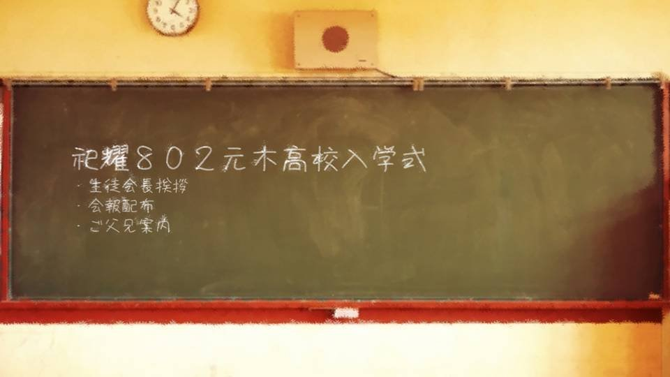

Script 0000207E

"Heave-ho! Is that all of it?"
"Yes, thank you so much, Goto-senpai!"
"By the way, is your speech for the upcoming entrance ceremony going okay?"
"Yes! Thanks to Goto-senpai's advice, it's perfect! Now it's just practice, practice!"
"Yes, thank you so much, Goto-senpai!"
"By the way, is your speech for the upcoming entrance ceremony going okay?"
"Yes! Thanks to Goto-senpai's advice, it's perfect! Now it's just practice, practice!"
"It's tough being president when you're a brand-new second-year.
Practice is good, but make sure you get across what you really want to say.
If you only read it by rote, I think it'll bore the people listening too."
"Oh! I heard from my sister! About Goto-senpai's legendary speech! You tore up your paper during your entrance ceremony speech, right!?"
"Ah, that... Ahaha, thinking about it now, maybe that was a little childish..."
"Oh! I heard from my sister! About Goto-senpai's legendary speech! You tore up your paper during your entrance ceremony speech, right!?"
"Ah, that... Ahaha, thinking about it now, maybe that was a little childish..."
"But I heard everyone got really fired up.
Maybe I'll try it too."
"It'd be a problem if it turned into a tradition... So you won't need to do something like that, make sure you get your own feelings across."
"Understood! But, Goto-senpai... is it all right? Always helping us like this..."
"What do you mean?"
"It'd be a problem if it turned into a tradition... So you won't need to do something like that, make sure you get your own feelings across."
"Understood! But, Goto-senpai... is it all right? Always helping us like this..."
"What do you mean?"
"Your help really saves us, but...
You know, there's a senpai of yours in the hospital, isn't there?"
"Ah, yeah, I go visit her in the hospital sometimes. Kogori-senpai is always at her side, so there's no need for me to go that often too―"
"Somehow that just... doesn't sound like you, Goto-senpai."
"Doesn't sound like me?"
"Ah, yeah, I go visit her in the hospital sometimes. Kogori-senpai is always at her side, so there's no need for me to go that often too―"
"Somehow that just... doesn't sound like you, Goto-senpai."
"Doesn't sound like me?"
"Goto-senpai, wouldn't you normally take turns visiting with that senpai?
Going to the hospital all the time is a pretty big burden, isn't it?"
"That's what I suggested at first, too. But Kogori-senpai seems to get anxious if she doesn't see her face every day."
"I... see... Hey, Goto-senpai, isn't there some reason it's hard for you to go to the hospital?"
"There isn't... anything like that."
"............"
"That's what I suggested at first, too. But Kogori-senpai seems to get anxious if she doesn't see her face every day."
"I... see... Hey, Goto-senpai, isn't there some reason it's hard for you to go to the hospital?"
"There isn't... anything like that."
"............"
"From what I hear, the reason Niimura-senpai ended up like that is that she shielded Kogori-senpai.
So somehow... it's a little hard to watch the way Kogori-senpai acts in that hospital room..."
"I see... Sorry for asking something so pointless."
"Come on, the sun's already gone down. Let's go home."
"Okay... Uh, thank you for today, too!"
"I see... Sorry for asking something so pointless."
"Come on, the sun's already gone down. Let's go home."
"Okay... Uh, thank you for today, too!"